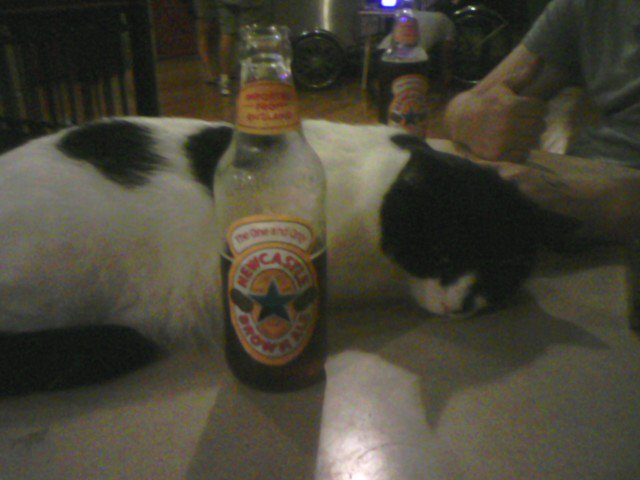

Experiment #7992 - Which type of beer goes best with a black and white cat?
Bill Kowal

Beers preferred with black and white cats
A total of 1337 people were polled
| Beer |
% Preferred |
| Newcastle |
38% |
| Guinness |
33% |
| Yuengling |
21% |
| Narragansett |
7% |
| Natural Ice |
1% |
Learn more about the beers used in this experiment!